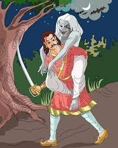

14. કોણ છે ગુનેગાર ? |
જ્યારે રાજા વિક્રમાદિત્યએ ફરી એકવાર ઝાડ પર ઊંધી લટકતી બેતાલને પોતાના ખભા પર ઊંચકીને સ્મશાન તરફ ચાલવા માંડ્યું ત્યારે બેતાલે એક નવી વાર્તા શરૂ કરી. બેતાલે કહ્યું….
લાવણ્યાવતીનું સૌંદર્ય એટલું સુંદર હતું કે કોઈ પણ પુરુષ તેના પર મુગ્ધ થઈ જતો. એક દિવસ લાવણ્યાવતી તેના ઘરની છત પર સૂતી હતી. મધ્યરાત્રિ થતાં જ એક ગંધર્વકુમાર આકાશમાં ઉડી રહ્યો હતો. જ્યારે તેની નજર લાવણ્યાવતી પર પડી ત્યારે તે તેના તરફ આકર્ષાયો. ગાંધર્વ કુમાર લાવણ્યાવતીને ઉપાડી લઈ ગયા. હરિસ્વામી સવારે ઉઠ્યા ત્યારે તેમની પત્ની ગાયબ હતી.
હરિસ્વામી માટે આ ખૂબ જ દુઃખની વાત હતી. તે તેની પત્નીના અપહરણથી એટલો દુઃખી હતો કે તેણે આત્મહત્યા કરવાનું નક્કી કર્યું. જ્યારે લોકોને આ વાતની જાણ થઈ ત્યારે તેઓએ હરિસ્વામીને સમજાવ્યું કે તેઓ તીર્થયાત્રાએ જાય. તીર્થયાત્રા પર જવાથી તમારા બધા પાપ ધોવાઈ જશે અને તમારી પત્ની તમને પરત કરવામાં આવશે. હરિસ્વામી પાસે બીજો કોઈ વિકલ્પ ન હતો તેથી તેઓ તીર્થયાત્રા માટે ઘર છોડી ગયા.
|  |
હરિસ્વામી એક ગામમાંથી પસાર થતા હતા ત્યારે તેમને ભૂખ લાગી હતી. તે એક બ્રાહ્મણના ઘરે પહોંચ્યો. બ્રાહ્મણની પત્નીએ હરિસ્વામીને ખાવા માટે ખીર આપી. હરિસ્વામી એ ખીરને તળાવના કિનારે લઈ ગયા જેથી તેઓ મોં અને હાથ ધોયા પછી ખીર ખાઈ શકે અને જો તરસ લાગે તો પાણી પણ મેળવી શકે. ખીરની વાટકી ઝાડ નીચે મૂકીને હરિસ્વામી હાથ-પગ ધોવા લાગ્યા. એટલામાં એક ગરુડ આવીને તે ઝાડ પર બેસી ગયું. ગરુડના મોંમાં સાપ હતો અને તે તેને ખાઈ રહ્યો હતો. હરિસ્વામીની ખીરમાં સાપનું ઝેર ટપક્યું. ભૂખ્યા હરિસ્વામીએ ઝડપથી તે ખીર ખાધી. તેને ખ્યાલ નહોતો કે ખીરમાં ઝેર છે.
હરિસ્વામીના શરીરમાં ઝેર ફેલાઈ ગયું અને તેઓ પીડાથી કરડવા લાગ્યા. હ રિસ્વામી દોડીને બ્રાહ્મણની પત્ની પાસે ગયા અને પૂછ્યું કે તમે મને ઝેર કેમ આપ્યું અને આટલું કહીને તે મરી ગયો. જ્યારે બ્રાહ્મણે આ જોયું, ત્યારે તેણે તેની પત્નીની એક વાત ન સાંભળી અને તેના પર બ્રાહ્મણની હત્યાનો આરોપ લગાવ્યો અને તેને તેના ઘરની બહાર ફેંકી દીધી.
આ વાર્તા સંભળાવ્યા પછી, બૈતાલે રાજા વિક્રમાદિત્યને પૂછ્યું, “રાજા, મને કહો કે આ વાર્તામાં ગુનેગાર કોણ છે, સાપ, ગરુડ કે બ્રાહ્મણની પત્ની? રાજાએ જવાબ આપ્યો, "આ વાર્તામાં, આ ત્રણમાંથી કોઈ પણ ગુનેગાર નથી, કારણ કે સાપ તેના દુશ્મન એટલે કે ગરુડના નિયંત્રણમાં હતો, તે કંઈ કરી શકતો ન હતો. ગરુડે જાણીજોઈને ખીરમાં ઝેર ભેળવ્યું ન હતું, બલ્કે તે શાંતિથી પોતાનો ખોરાક ખાઈ રહ્યો હતો. બ્રાહ્મણની પત્નીએ મહેમાનનું સ્વાગત કર્યું અને તેમને ભોજન આપ્યું. આ ત્રણેયને દોષિત કહેશે તે પોતે જ દોષિત ગણાશે. જો આ વાર્તામાં કોઈ દોષિત હોય તો તે બ્રાહ્મણ છે જેણે પોતાની નિર્દોષ પત્નીને વિચાર્યા વિના અને સત્ય જાણ્યા વિના બેઘર કરી દીધી હતી. બૈતલે કહ્યું, "રાજન, આ વખતે પણ તમે સાચો જવાબ આપ્યો છે." આટલું કહીને બૈતાલ ફરી ઊડીને ઝાડ પર લટકી ગયો. રાજા વિક્રમાદિત્ય તેને પકડવા તેની પાછળ દોડ્યા.